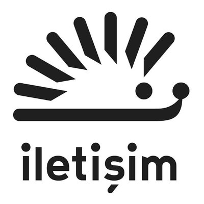
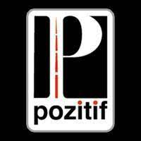

İletişim Yayınları
İletişim Yayınları’nın kuruluşu, 12 Eylül 1980 askerî darbesi ile oluşan rejimin son demlerinde gerçekleşti. Seçimler yaklaşıyordu.
Yönetim, eskileri kapatılıp yenileri kurulmuş bulunan partilerden icazetli olanları vasıtasıyla, “sivillere” devredilecekti.
Yayınevi’ni kurmaya girişenler, bu “sivilleşme” ve “demokratikleşme” şeklinin pek derde deva olmadığını düşünenlerdendi.
Askerî yönetimin, siyaseti topluma çok gören, bu ülke halkını reşit saymayan tavrının ve bu tavrın meşruiyet kazanabilmesinin,
derin ve ciddi bir sorunu işaret ettiği fikrindeydiler. Kurumlaşmış, zihniyet yapılarına kazınmış bir sorundu bu. Ki zaten
İletişim Yayınları projesini başlatanlar, 12 Eylül 1980 öncesinde de “Türkiye’nin düzeni” ile sorunu olmuş, radikal bir toplumsal
dönüşüm için, özgürlükçü bir sosyalizm arayışı için bulundukları ortamlarda faaliyet göstermiş, kafa yormuş, yazı yazmış,
yayıncılık yapmış insanlardı.
Kurumlaşmış, etkili, yaygın, popüler bir yayıncılık faaliyeti yoluyla, 12 Eylül rejimi koşullarında vahimleşen bu temel
demokratikleşme sorununun üzerine varma kaygısıyla kuruldu İletişim. Toplumun her alanındaki özgürleşme saiklerinin,
özerk hareket ve düşünme yeteneklerinin teşvik edilmesi hedefleniyordu; ve bunun “öğretici” olmayan, konuşmaktan çok
konuşturan bir tutumla yapılması hedefleniyordu. “Yayınevi’ni kuranlar”dan söz ettik… ama belirtmeden olmaz: Bu “projenin”
adını koyan, Murat Belge’ydi.
Kuruluştaki saikler, İletişim Yayınları’nı gazetecilik ağırlıklı bir faaliyete itti. İlk İletişim ürünü olan İMBA Ekonomi Bülteni,
amatör heyecanla yürüyen bir gazetecilik stajı gibiydi! Stajın hedefi, bir haftalık dergi idi: Popüler bir sol haber dergisi. O dergi,
YeniGündem adıyla, 1984 Mayıs’ında önce 15 günlük olarak çıkmaya başladı; 1986 Mart’ında haftalığa döndü ve 1988 Ocak başına dek
yayınına devam etti.
YeniGündem, haftalık dergilerin siyasî gündemde hayli etkili olduğu o dönemde, emsalleri arasında en çok satan dergi değildi. Fakat
prestijli, önemsenen, hevesle takip edilen bir dergiydi. Her hafta YeniGündem alan 10 ilâ 15 bin insan, kapandıktan sonra çok özlediler
bu dergiyi - bazıları hâlâ özlediğini söylüyor! YeniGündem’in bir “kadro okulu” işlevi gördüğünü de söyleyebiliriz rahatlıkla.
Bugün Türkiye’de medya ve yayıncılık alanında farklı yetenekleriyle öne çıkan, farklı yönlerde konumlanmış çok insan var, YeniGündem’in
mutfağında yetişmiş ya da orada olgunlaşmış.
İletişim’in 1984-1988 dönemine, YeniGündem “amiral gemisi” olmak üzere, süreli yayınlar damgasını vurdu. 1984 yılında on sayı çıkan
aylık popüler-sol gençlik dergisi Gençlik ve Toplum, aynı yıl yayına başlayıp 1985’e kadar yayımlanan aylık sinema kültürü dergisi
Videosinema, 1983’ten 2003’e aylık yayını devam eden, bundan sonra da 6 aylık akademik bir dergi olarak yeni bir formatta hayat bulan
ve 30.yılında yayımına son veren Tarih ve Toplum (Yeni Yaklaşımlar)… Daha geç bir dönemde denenen çok kısa ömürlü haftalık mizah dergisi
Nankör’ü (1991) de ekleyebiliriz bunlara.
Bu dergiler filosu, İletişim’in kuruluşunda önüne koyduğu etkili, yaygın, popüler yayıncılık hedefine uygundu. Fakat “yan tesirleri” de
vardı bu yayılmanın: Bu pahalı bir işti, özellikle haftalık haber dergiciliği çok pahalı bir işti. Yayınevi’nin bu “paha”yı taşıyarak
kendi ayakları üzerinde durması, özerkliğini koruması, hatta giderek varlığını sürdürmesi güçleşiyordu.
1988 başında YeniGündem’in kapanmasının, İletişim’in tarihindeki en önemli dönüm noktası olduğunu söyleyebiliriz. 1988/89’da yönetim ve
iş örgütlenmesini yeniden düzenleyen Yayınevi, daha ‘oturaklı’, daha uzun soluklu, daha kalıcı olmasını hedeflediği bir yayın faaliyetine
yöneldi. Yani, ansiklopedik eserlere ve esas olarak kitaplara…

Pozitif Yayınları
Bünyesinde Pozitif Yayınları ve Feniks Yayınlarını bulunduran Artı Yayın Dağıtım 1998 yılında Kadıköy’de faaliyetlerine başladı. Artı Yayın Dağıtım halen sektörün önde gelen yayınevlerinin kitaplarını, kitabevlerine, zincir mağazalarına ve internet satış noktalarına ulaştırarak faaliyetlerini sürdürmektedir.
Yıllar içinde edindiği deneyim neticesinde kurduğu Pozitif Yayınevi ile Falih Rıfkı Atay, Orhan Koloğlu, Erdal Sarızeybek, Yılmaz Arıkan, Nurşen Mazıcı, Metin Aydoğan, Necip Hablemitoğlu gibi dönemine ışık tutan ve gelecek kuşaklara yol gösteren değerli yazarların eserlerini yayınladı. Ülkemizin önde gelen tarihçi, araştırmacı, tiyatro ve benzeri konularda önemli eserleri Türk Edebiyatı’na kazandırarak kültür hayatına devam etmektedir. Pozitif Yayınevi, Ömür Kurt, Yasemin Soysal, Gönül Ateşsaçan, Halil Coşkun, Serap Duygulu, Ayşen Oy, Saffet Dağdeviren, Nur Yaycıoğlu, Deepak Chopra ve Shelia Ellison gibi değerli yazarların kitaplarını yayın hayatına kazandırarak, çocuk gelişimin, sağlıklı yaşam, kişisel gelişim, subliminal işgal gibi çok geniş bir yelpazede ses getirmeyi başardı.
Daha sonra gelişen yayıncılık hayatına duyarsız kalmayarak Feniks Yayınevini kurarak başta çeviri edebiyat olmak üzere yerli ve yabancı yazarların değerli kitaplarını yayın hayatımıza kazandırdı.